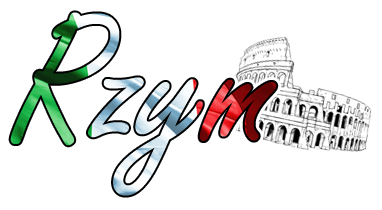
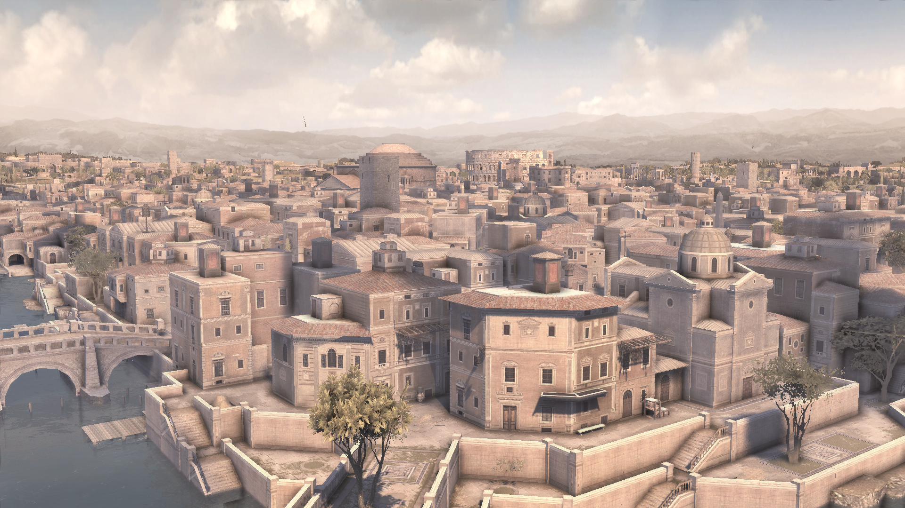
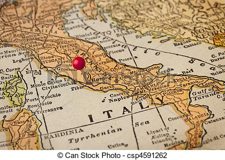
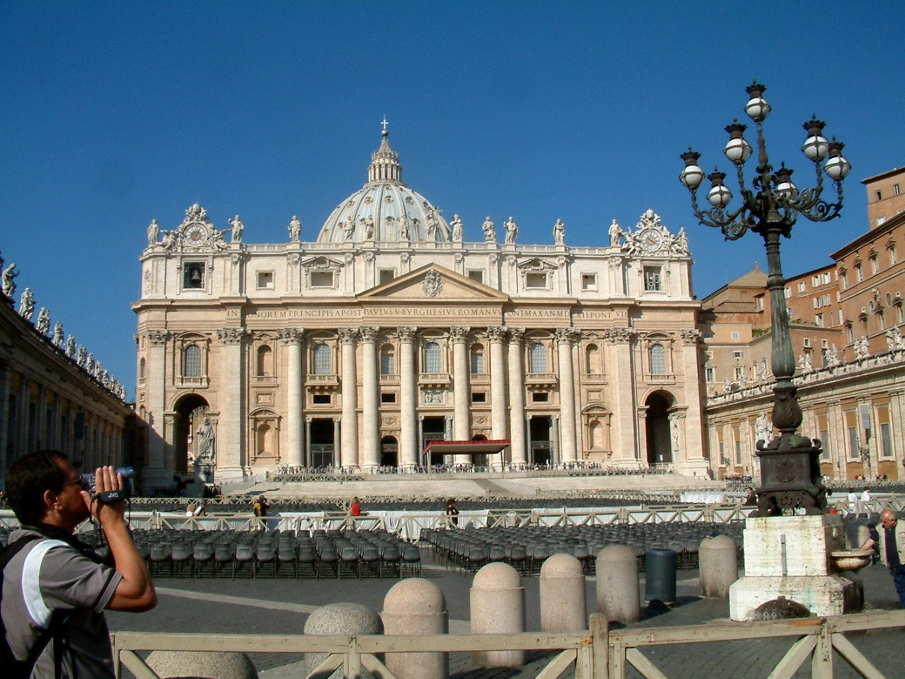
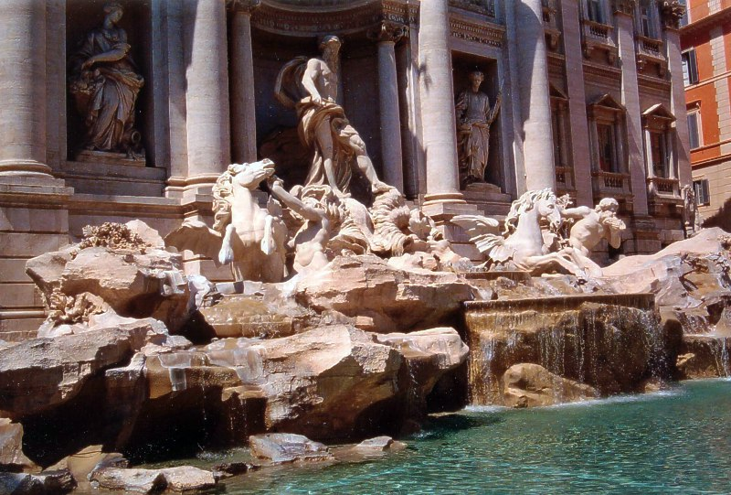
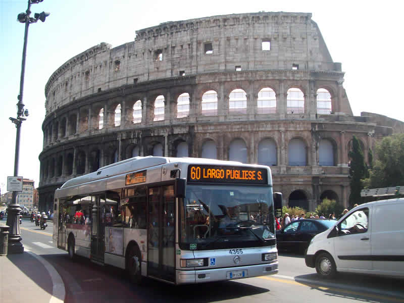

 Rzym to stolica Włoch i największe państwo tego kraju. Mieszka tam prawie 3 mln ludzi na powierzchni 1287 km2. Jest bardzo bogaty w zabytki starożytności i średniowiecza. W jego granicach leży miasto-państwo Watykan.
Historia miasta  Najstarsze ślady osadnictwa jakie do tej pory odnaleziono nad rzeką Tyber, datuje się między 1000, a 800 rokiem p.n.e. Rzym, prawdopodobnie powstał w 753 roku p.n.e. Przez pierwsze 250 lat swego istnienia Rzym był monarchią. W II połowie VI wieku p.n.e. pod berłem rodu Tarkwiniuszy osiągnął pozycję jednej z najpotężniejszych monarchii na Półwyspie Apenińskim. W mieście krzyżowały się wówczas różnorakie wpływy kulturowe. Niezwykle silnie swą obecność zaznaczyła kultura etruska, lecz w sztuce tego okresu widać również wyraźnie wpływy greckie i fenickie. Język i kultura latyńska nie zniknęły jednak; stanowiły o odrębności Rzymu w porównaniu z innymi, kwitnącymi wówczas ośrodkami miejskimi na terenie Italii. Miasto wyróżniała największa świątynia w tzw. stylu etruskim poświęcona bogu bogów Jowiszowi, powstała w ostatnich latach istnienia monarchii. Do końca dziejów Rzymu uważano, że podstawowe z jego instytucji społecznych i politycznych, stanowiły dzieło poszczególnych władców. Niektóre z tych instytucji przetrwały do dnia dzisiejszego, jak chociażby Senat. W czasie królestwa Rzymem rządziło siedmiu władców. Kolejno zasiadali po Romulusie: Numa Pompiliusz, Tullus Hostiliusz, Ankus Marcjusz, Tarkwiniusz Stary, Serwiusz Tuliusz oraz Tarkwiniusz Pyszny. Monarchia swój szczytowy okres rozwoju miała w VI wieku p.n.e., kiedy to dzięki sojuszowi z Kartaginą panowała nad zachodnią częścią Morza Śródziemnego. W tym czasie, od roku 616 do 509 p.n.e., na tronie rzymskim zasiadali trzej ostatni królowie Rzymu, będący pochodzenia etruskiego: Tarkwiniusz Stary, Serwiusz Tuliusz i Tarkwiniusz Pyszny. Współcześni historycy uważają Romulusa za postać legendarną, są jednak skłonni uznać historyczność następnych królów rzymskich, a zwłaszcza trzech ostatnich władców pochodzenia etruskiego. Cywilizacja etruska wywarła ogromny wpływ na Rzym. Rzymianie zapożyczyli od Etrusków: przepisy procedury sądowej, triumfy, alfabet, sztukę budowania świątyń, realizm w rzeźbie i malarstwie, wróżbiarstwo. Im też prawdopodobnie zawdzięcza się ustanowienie trzech organów władzy w królestwie, w postaci: króla, zgromadzeń kurialnych i senatu. Do góry Warunki geograficzne w mieście  Rzym znajduje się w strefie klimatu subtropikalnego typu śródziemnomorskiego, z łagodnymi zimami i ciepłymi, miejscami gorącymi latami. Średnia roczna temperatura wynosi 20°C w dzień i 10°C w nocy. Średnia temperatura miesięcy zimowych – grudnia, stycznia i lutego wynosi wokół 13°C w dzień i 4°C w nocy, zima pod względem temperatury i nasłonecznienia przypomina kwiecień i październik w Polsce. Średnia temperatura sześciu miesięcy letnich, od maja do października wynosi około 26°C w dzień i 15°C w nocy. Dwa miesiące – kwiecień i listopad mają charakter przejściowy, ze średnią temperaturą około 17°C w ciągu dnia i 7°C podczas nocy, pod względem temperatury i nasłonecznienia nieco przypominają maj i wrzesień w Polsce. Rzym ma tylko nieco ponad 70 dni deszczowych rocznie. Do góry Zabytki  Forum Romanum - Rozciąga się w rozległej dolinie otoczonej wzgórzami Palatynu, Kapitolu i Eskwilinu. Wraz z rozwojem Rzymu, forum przybierało charakter centrum życia publicznego, religijnego, politycznego i sądowego. Po upadku imperium Forum Romanum było wielokrotnie niszczone przez najazdy miłośników starożytności, którzy wywozili stąd zabytki. Zabierano też materiał do budowy nowych domów, pałaców, kościołów, przysypując gruzami wiele arcydzieł sztuki antycznej. Przy wejściu od strony Koloseum mijamy najpierw ruiny świątyni Wenery i Romy, wzniesionej przez Hadriana ok. 121 r. n.e. W murach tej świątyni w IX w. wybudowano kościół Santa Maria Nova. W XVII w. w ołtarzu kościoła złożono relikwie św. Franciszki i odtąd nosi nazwę Santa Francesca Romana. Barokowa fasada wzniesiona została w 1616 r., natomiast kwadratowa wieża pochodzi z XII w. Do kościoła przylega klasztor - obecnie muzeum Antiquarium Forense.
Do góry Atrakcje
W Rzymie można odwiedzić:
 Do góry Transport  W Rzymie zaczynają się linie kolejowe dla pociągów wysokich prędkości. Jest obsługiwany przez 4 lotniska. Znajduje się tam też duży port morski. Rym przecinają trzy główne autostrady oraz cztery trasy międzynarodowe. W skład miejskich usług transportowych wchodzi sieć linii autobusowych, trolejbusowych i tramwajowych oraz metro. Do góry Ceny Walutą obowiązującą we Włoszech jest euro.
|
{kind=link}
{kind=link}
{kind=link}